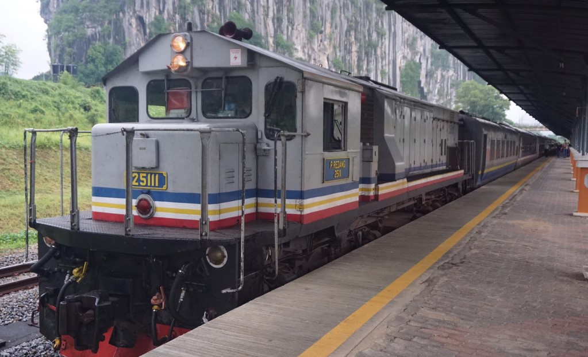

| 🚐 EXCURSION VAN 🚐 |
|---|
| Tourists and visitors to Tok Bali Kelantan can take this excursion bus to their desired destination. A van can comfortably accommodate two families for a decent cost. Visitors can book this van by visiting the website. You can contact through this number to make a reservation. (Van Sewa Kota Bharu: 010-388 1343) |
| 🚌 TOUR BUS 🚌 |
| In Tok Bali, Kelantan, bus facilities are also provided. This bus is typically used for school-based study tours, family days, and other activities. Visitors can use this bus after arriving at the Tok Bali grounds.This bus can be reserved through the website provided. The bus is a spacious double-decker. Tourists can board this bus at the Kota Bharu bus station, or it can pick them up wherever they are. So, if tourists want to use this bus to get to their destination.They can look it up on the website listed below: |
| 🚖 TAXI 🚖 |
| Tourists can take taxis by booking them online or at the taxi terminal. Kelantan taxi & Outstation Trip is close to Tok Bali, so tourists can take a taxi there or call them to thier location. Another thing to consider is the payment rate based on the number of kilometers to the destination, so you can make the best decision based on your available budget.
|
| 🏭 East Coast Rail Link (ECRL) 🏭 |
|  |
| Most people are unfamiliar with ECRL because they are more familiar with LRT, Commuter, Ets, and other modes of transportation.What's more intriguing is it will be built at Tok Bali where it is located in Kelantan . Visitors can take the ECRL, which stops in Tok Bali.This makes it easier for tourists to visit the location. It also saves time because the ECRL travels at a faster speed than other vehicles on the road. Aside from that, it is less expensive than other modes of transportation. |